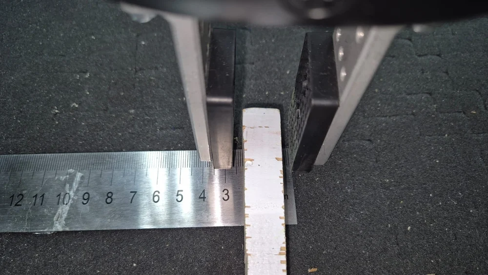
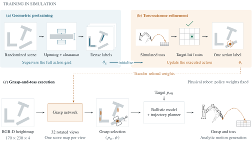
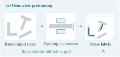
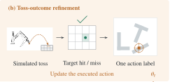
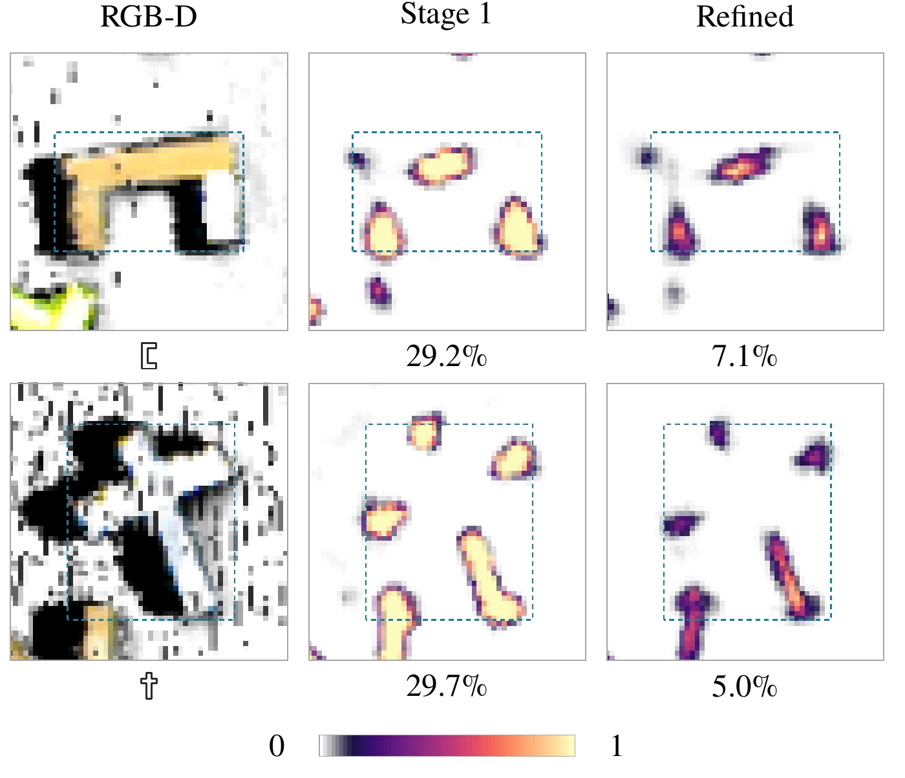
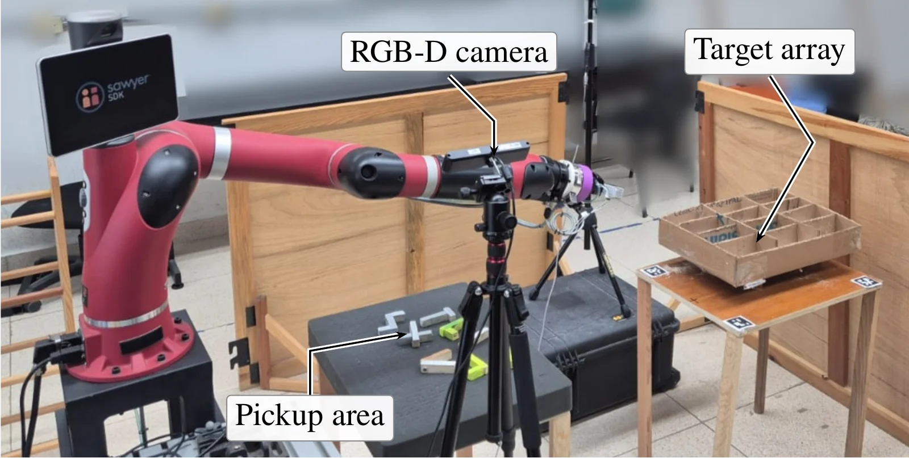
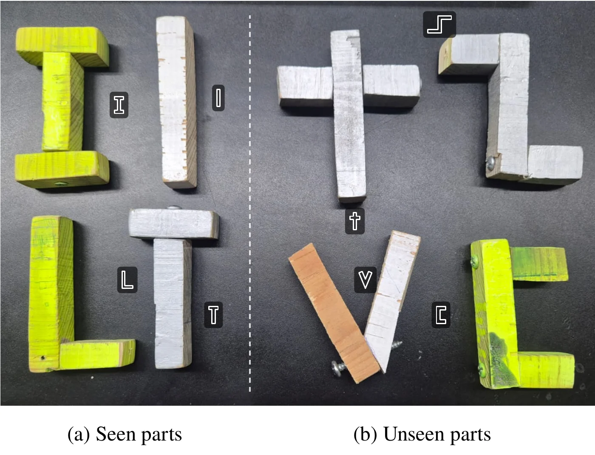
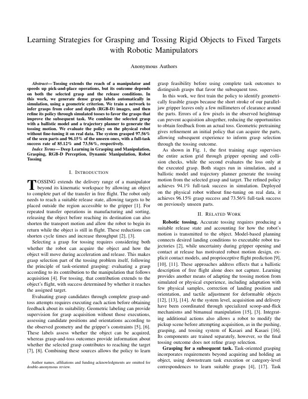
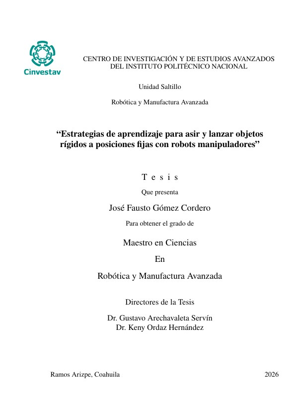

Geometric pretraining
Automatically label candidate grasps using gripper opening and finger clearance. Build a dataset of 1,000 simulated scenes.
Cinvestav Saltillo / Research project · 2026
A grasp policy trained in simulation, combined with ballistic motion planning, transfers to a physical Sawyer robot.
This reel documents an earlier evaluation. The results below follow the current paper and thesis.
02training stages
entirely in simulation
08physical part shapes
four seen, four unseen
12target bins
beyond the arm’s reach
01 / The question
Lifting a part is only the beginning.
The selected grasp also determines how the part is held during acceleration and release. A grasp that works for picking may still produce a poor throw.
With a gripper opening of just 12–24 mm, the first challenge is finding feasible grasps. The next is learning which of those grasps help the part reach its target.

02 / The method
Two training stages shape the grasp policy. A ballistic model and trajectory planner generate the throwing motion.



Physical execution · Grasp policy fixed
Automatically label candidate grasps using gripper opening and finger clearance. Build a dataset of 1,000 simulated scenes.
Continue training with simulated grasp-and-toss attempts. Target hits and misses supervise the selected action.
Keep the grasp network fixed. Combine its selected grasp with the ballistic model and a constrained trajectory planner.
The grasp policy receives no fine-tuning on real data. A global release-speed correction is calibrated on the physical robot and held fixed during evaluation.
03 / Inside the policy
Before refinement, high grasp scores cover broader areas of each part. After refinement, they concentrate in smaller regions.
The comparison uses the same physical observations and selected-part masks for both networks.
39.35%6.92%
Geometric pretraining → refined policy
04 / The physical experiment
A seven-degree-of-freedom Sawyer transfers rigid parts from the pickup area into a target array beyond its direct reach.


The twelve bins form a 3 × 4 array. Targets are visited in randomly ordered cycles, and physical outcomes are checked manually.
“Unseen” refers to the four held-out shapes in this study. It does not mean arbitrary objects.
05 / The results
Simulation and physical results are reported separately. Complete task success requires both a successful grasp and entry into the assigned target bin.
Simulation / U-Net · 32 orientations
Complete task success on the same evaluation task, before and after refinement.
1,720 grasp attempts per model · Paper, Table I
Physical robot / Seen & unseen parts
Successful target entries per grasp attempt, including failed grasps.
826 physical attempts in total · Paper, Table II
| Metric | Seen shapes | Unseen shapes |
|---|---|---|
| Grasp success | 400 / 410 97.56% | 400 / 416 96.15% |
| Target entry after grasp | 349 / 400 87.25% | 306 / 400 76.50% |
| Complete task | 349 / 410 85.12% | 306 / 416 73.56% |
What remains difficult
Of the 171 physical task failures, 145 occurred after acquisition. Most remaining failures therefore lie in completing the toss.
26 failed grasps145 misses after acquisition
Entry, rather than retention. Physical success means entry into the assigned bin, including cases followed by a bounce out. A toss that first enters another bin is a miss.
A defined evaluation domain. The study uses eight rectilinear part shapes, one physical instance per shape, and a prescribed tossing motion.
Fixed deployment parameters. The network is trained entirely in simulation; the physical release-speed correction is calibrated once and kept fixed.
06 / Read the work
The paper presents the method and main findings. The Spanish thesis develops the foundations, implementation, experiments and technical appendices.

A working manuscript describing geometric pretraining, toss-outcome refinement, and simulation and physical evaluation.

The full technical account, including the theoretical foundations, methodology, calibration, physical results and appendices.
@mastersthesis{gomezcordero2026tossing,
title = {Estrategias de aprendizaje para asir y lanzar objetos
r{\'i}gidos a posiciones fijas con robots manipuladores},
author = {G{\'o}mez Cordero, Jos{\'e} Fausto},
school = {Centro de Investigaci{\'o}n y de Estudios Avanzados
del Instituto Polit{\'e}cnico Nacional, Unidad Saltillo},
year = {2026}
}